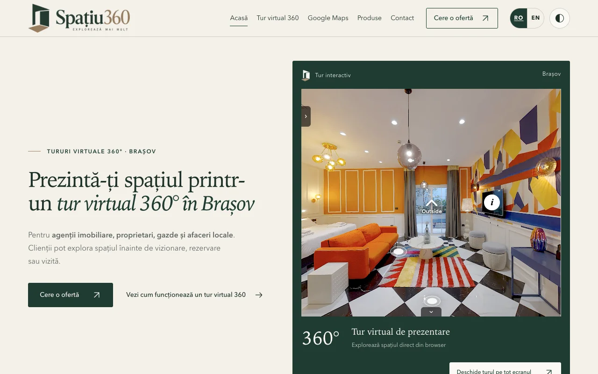

Site-ul nu răspunde la întrebarea „De ce să te aleg?”
Un client nou trebuie să înțeleagă cui te adresezi, ce primește și care e pasul următor.
Primul pas posibil: verificăm mesajul și drumul dintre Google și o solicitare.
Brașov · Codlea · împrejurimi
Descoperim unde pierzi timp, clienți sau oportunități și alegem un prim pas practic pentru afacerea ta.
Povestește-mi ce vrei să îmbunătățești
Nu pornesc de la o listă de servicii. Mă uit la ce te costă timp, clienți sau oportunități.
Un client nou trebuie să înțeleagă cui te adresezi, ce primește și care e pasul următor.
Primul pas posibil: verificăm mesajul și drumul dintre Google și o solicitare.
Datele se introduc de mai multe ori, iar echipa sare între aplicații pentru aceeași sarcină.
Primul pas posibil: alegem un proces repetitiv și vedem ce se poate simplifica.
Fără un mod de lucru comun, rezultatele variază și e greu să integrezi instrumentele în rutina echipei.
Primul pas posibil: testăm un flux de lucru real și îl exersăm împreună.
Pentru cazare, showroom-uri sau proprietăți, fotografiile obișnuite pot lăsa întrebări importante.
Primul pas posibil: facem spațiul mai ușor de explorat înainte de vizită.
Abia apoi alegem ce merită schimbat. Uneori e o pagină, un proces sau felul în care echipa folosește un instrument.
Vorbim despre cum ajung cererile, ce se întâmplă după și unde pierde echipa timp.
Verific site-ul, informațiile locale sau pașii pe care trebuie să-i facă înainte să cumpere.
Dacă are sens, fac o îmbunătățire concretă și explic echipei cum să o folosească.
Lucrez în informatică și formare din 2020. Am predat dezvoltare web, programare, testare și arhitectură software.

Un exemplu construit de la zero
Tururi virtuale și prezentare digitală pentru spații din zona Brașov. Un răspuns practic pentru situațiile în care clientul vrea să vadă locul înainte să-l viziteze.
Vezi Spațiu360Pot să construiesc, să explic și să instruiesc echipa, astfel încât soluția să fie utilă și după ce implementarea s-a încheiat.
Scrie-mi ce ai vrea să funcționeze mai bine. Îți răspund cu o întrebare sau cu primul lucru pe care l-aș verifica.
Nu ai nevoie de un brief sau de o soluție gata aleasă.